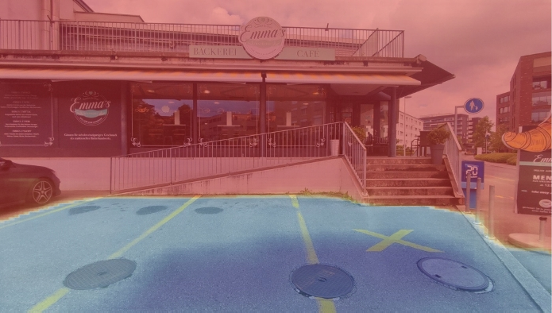
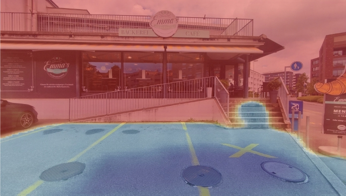
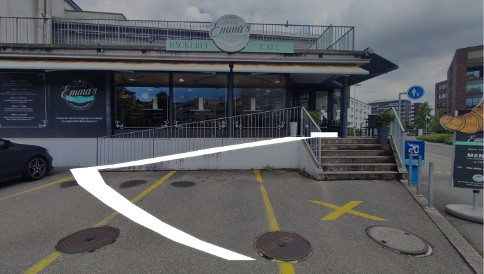
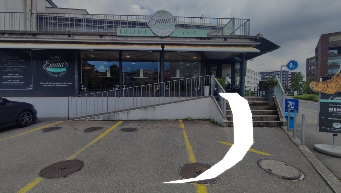
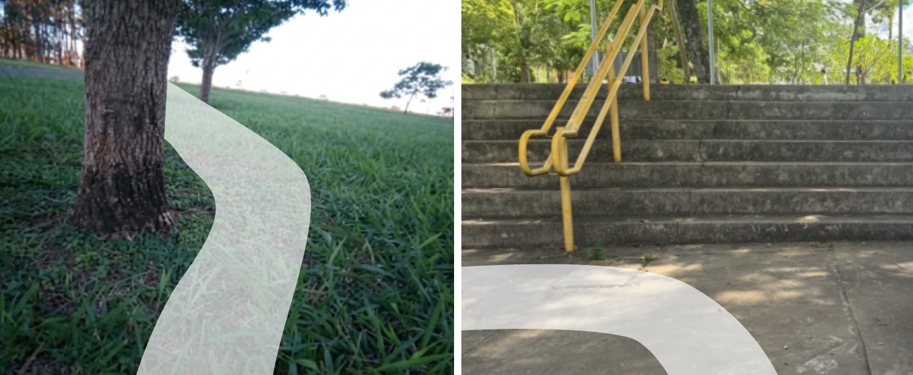
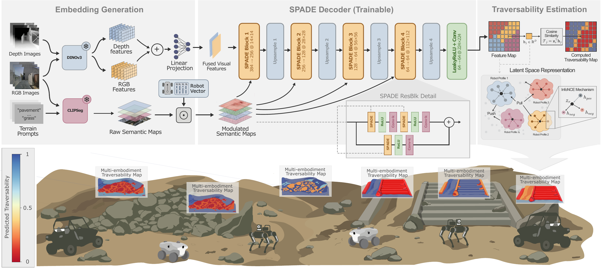
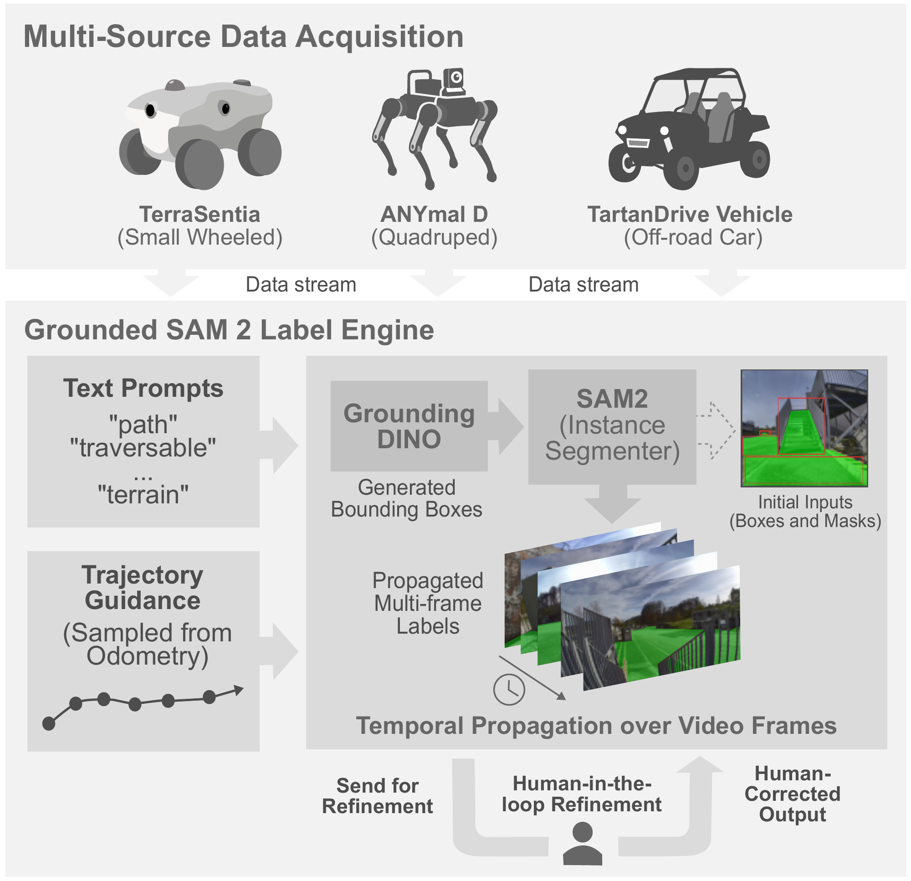
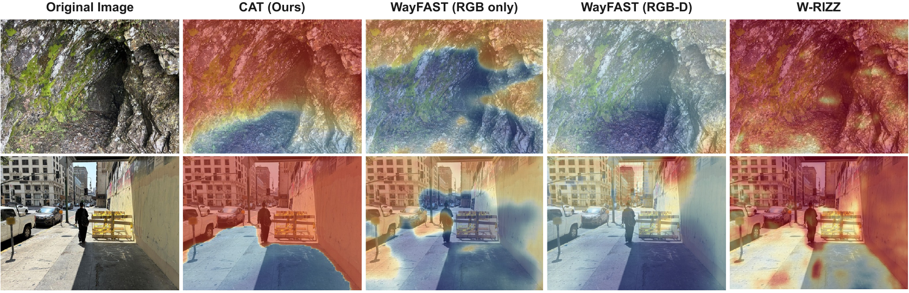

One Scene, Two Robots
The RGB-D observation stays fixed. Switching from the wheeled to the legged profile expands CAT's prediction from flat pavement to the stairs and uneven ground.
Drag the divider, or focus it and use the arrow keys, to compare robot profiles.




Capability-Conditioned Predictions. Top: CAT predictions for wheeled and legged profiles, with blue indicating high traversability and red indicating low traversability. Bottom: NaviTrace human traces route the wheeled robot around the stairs (left) and the legged robot over them (right).
Real-World Deployment
CAT's predicted maps drove a simple greedy pure-pursuit planner on two physical platforms.

- Spot, legged profile: 10/10 collision-free forest runs.
- TerraSentia, wheeled profile: avoided the staircase in 7/10 trials.
- Onboard rate: 4.8 Hz on a Jetson Orin Nano.
The three TerraSentia failures came from the greedy planner cutting through a correctly masked hazard.
How CAT Works
CAT embeds robot-specific constraints in the spatial representation:
- Visual features. Frozen DINOv3 encodes RGB and depth.
- Terrain semantics. Frozen CLIPSeg maps terrain prompts to per-pixel probabilities.
- Capability modulation. A robot vector rescales semantic channels that condition the SPADE decoder.
- Traversability readout. Each spatial feature is compared with a robot-specific prototype using cosine similarity.

Trajectory-Grounded Supervision
Physical trajectories anchor dense masks to terrain that robots successfully traversed.
- Project each robot's trajectory into the aligned camera view.
- Combine GroundingDINO boxes with trajectory point prompts for SAM 2.
- Propagate the dense masks through video.
- Send low-confidence or temporally inconsistent frames for human refinement.

Results
CAT is evaluated against WayFAST and W-RIZZ on human traces and physically executed trajectories.
+11.0% over W-RIZZ
+15.8% over WayFAST RGB-D
after switching profiles
Evaluation notes
Path-vs-Rest AUROC and AUPRC measure ranking against positive masks, not safety classification. Pixels outside a human trace or executed path are unobserved and may still be traversable.

Citation
@inproceedings{capezzuto2026cat,
title = {Towards Capability-Aware Traversability Navigation for Unstructured Environments},
author = {Capezzuto, Gianluca and Tommaselli, Felipe and Angarola, Matheus P. and Godoy, Ricardo V. and Becker, Marcelo},
booktitle = {IEEE/RSJ International Conference on Intelligent Robots and Systems (IROS)},
year = {2026}
}Acknowledgments
This work was supported by the São Paulo Research Foundation (FAPESP), Grants #2025/22381-3, #2025/20858-7, and #2025/04308-7; and by Petróleo Brasileiro S/A – Petrobras, using resources from the ANP R&D clause, in partnership with the University of São Paulo (USP) and the Fundação de Apoio à Física e à Química (FAFQ), under Cooperation Agreements #2023/00016-6 and #2023/00013-7.